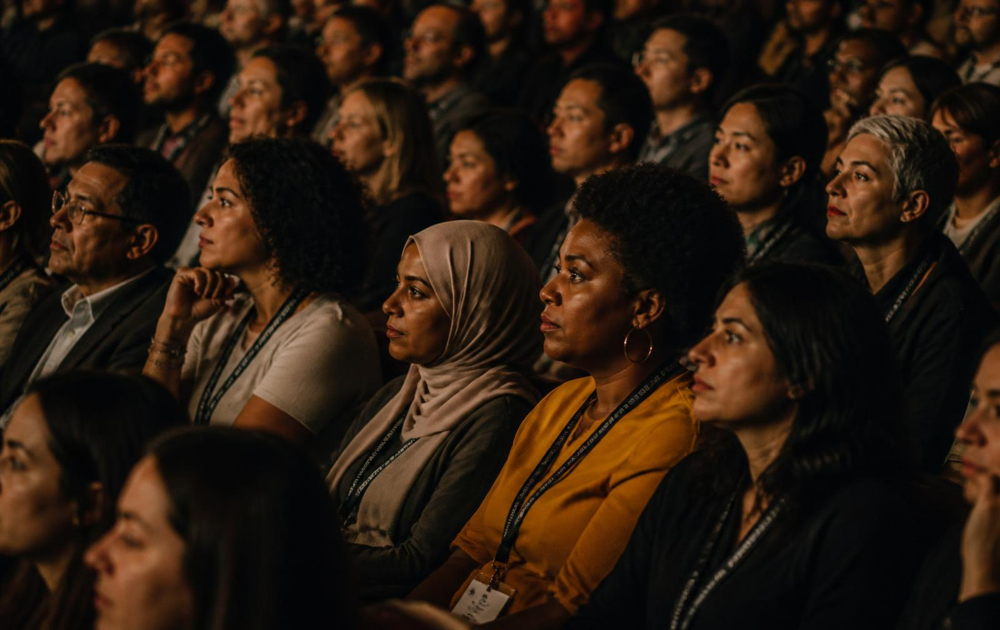
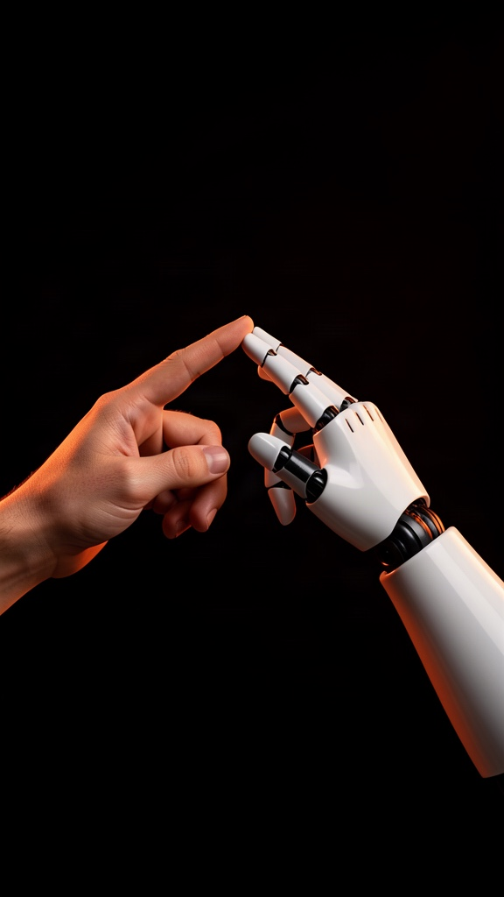
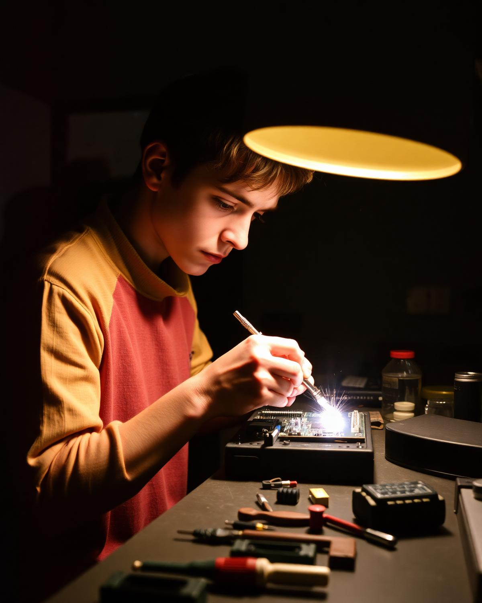
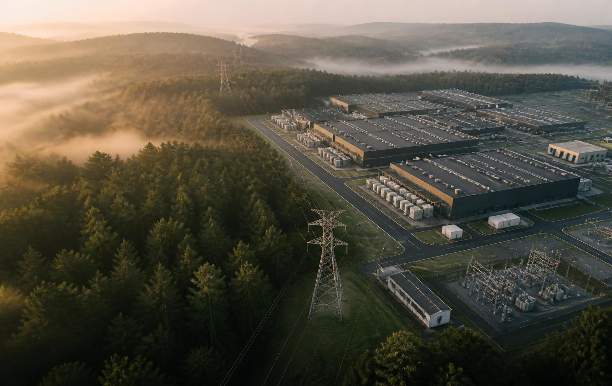
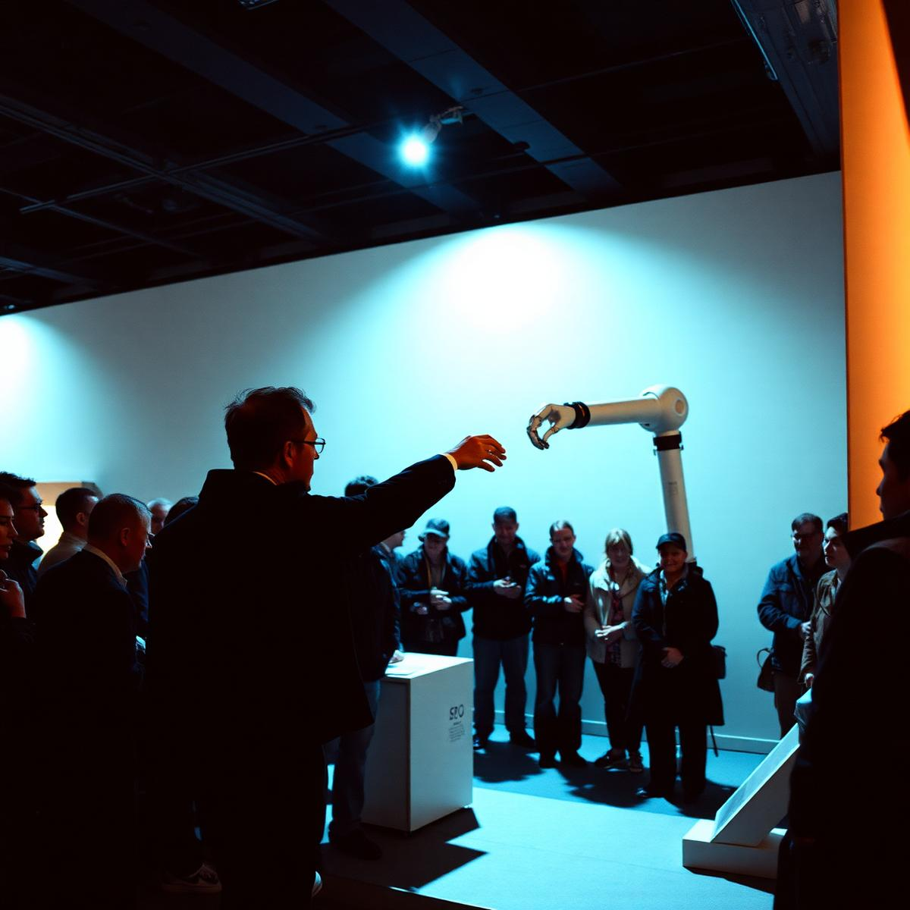
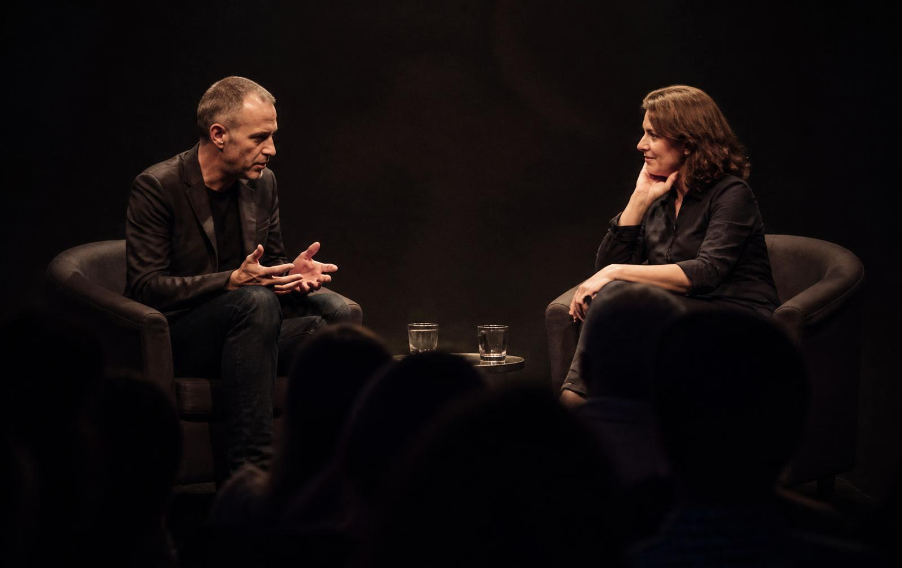

Sac Tech Week capstone summit Tickets now available
Tandem
Technology. Humanity. Together.
A gathering for the people building, questioning, experiencing and imagining the future of technology.
Human + Machine + Society + Build + Earth + Future + Technology moves fast. Humanity decides where. + Human + Machine + Society + Build + Earth + Future + Technology moves fast. Humanity decides where. +
+ Who it's for
For people who…
01build the things everyone else just uses
02ask who a technology is actually for
03are excited and uneasy at the same time
04care what the cloud costs the Earth
05want to see it, touch it, and question it
06believe the future is a choice, not a forecast

If you've ever asked "should we?" out loud — this is your room.
+ Capability is not the same as progress
We don't believe the future is human vs. technology.
Human +technology
Progress +responsibility
Innovation +reflection
Humanity +Earth
We go further when humans and technology work together.
Tandem asks
01What can we build?
02What should we build?
03Who should benefit?
04What should remain human?
05What does it cost?
And what kind of world are we creating together?
The Tandem Principle
Human first doesn't mean technology last.
It means putting human needs, agency, dignity and the health of our planet into the conversation from the beginning—not after the technology has been built.
+ The Conversation — six tracks
Not a traditional tech conference. An exploration of capability, humanity and Earth.
01
Human
How do we stay human?
What should never be automated?
Are we outsourcing our thinking?
What should remain human?

02
Human + Machine
What does it mean to work in Tandem?
AI as collaborator, not replacement
The augmented worker
What humans are uniquely good at
03
Society
How do we live together?
Who decides what technology should do?
Trust in a synthetic world
Whose values get encoded?

04
Build
What are we actually creating?
Designing for agency, not addiction
Accessibility and privacy by design
Human-in-the-loop technology

05
Earth
Human-first isn't human-only.
AI, energy and water
E-waste and critical minerals
Can technology become regenerative?
06
Future
What are we choosing?
2035: a day in the life
What should we preserve?
What would a good future look like?

The Tandem Experience
Not something you listen to. Something you experience.
Hear it
Big questions and unexpected conversations with the people shaping what's next.
See it
Live demos of AI, robotics, accessibility and climate technology.
Question it
Ask why it was built, who it's for, and what the creators chose not to build.
Try it
Interact with the technology and decide for yourself:
Does this make our lives better?

The Tandem Experience
Conversations that invite us to zoom out—and get closer.
+ The Day
Welcome
Opening / Networking
Opening Chat
Nickolas Hastings(CoFounder, Sac Tech Week)
Featured Session
Josh Dream(Author, After the Jobs Are Gone)
Featured Session
X Eyé(Partner, Offline Research)
Conversation
Derek Chase(VP Robotics & AI, Nextpower)
Ryan Richardson(CEO, Praxis Enablement) · MODERATOR
Conversation
Kickstradomis(Founder, Kickverse)
Basko Kante(Founder, Oakland Tech Week)
Venus Rose(Founder, Haus of Creators) · MODERATOR
Conversation
Venus Rose(Founder, Haus of Creators)
Noelle Blanco(CCO, Park Talent) · MODERATOR
Closing Panel
Rita Gass(CTO, City of Rancho Cordova)
John Salter(Head of Tech, HMCI)
Sadie St. Lawrence(CEO, HMCI) · MODERATOR
Tickets now available
Stay in the loop
Tickets are available now. Subscribe for Tandem and Sac Tech Week updates.